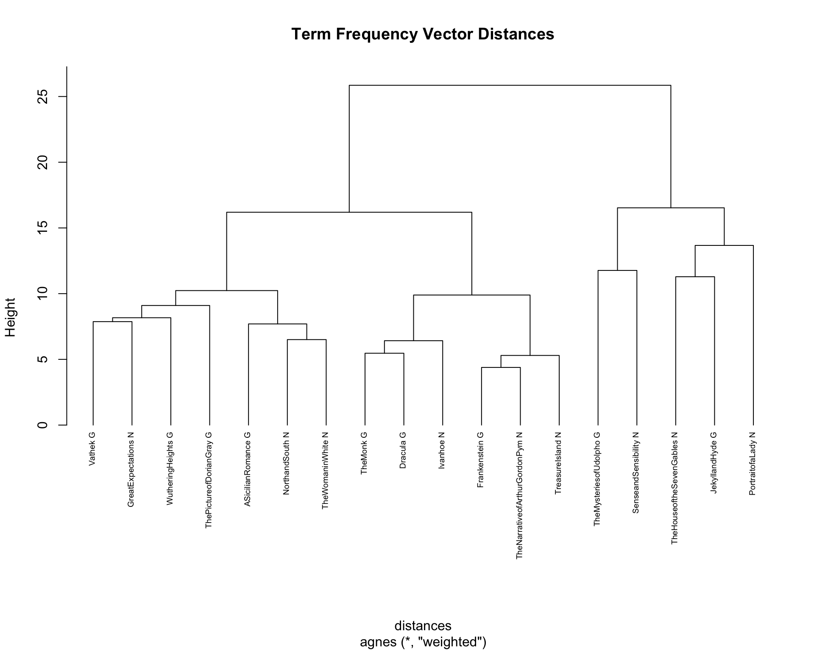

19 Working with Unstructured Data
19.1 Lesson Objectives
By the end of this lesson, you should be able to:
- Make metadata from unstructured data
- Load and clean a collection of text files into R
- Know concepts and consequences of stop words
- Build a corpus and a document-term matrix
- Run high-level analyses of text corpora
19.2 Preliminaries
install.packages(c("tidyverse", "tokenizers", "tm", "cluster"))19.3 From File Names to Metadata
First, let’s get some information about our files.
input_dir <- "./IST8_text_corpus/"
fnames <- list.files(input_dir)While we could start analyzing these files immediately, their names contain a lot of metadata, which could be helpful. We’ll need to structure this info first (yes, we’re structuring unstructured data so we can structure more unstructured data—welcome to data forensics!). Mercifully, whoever created these files had a convention in mind for giving them names. We can latch onto the patterns within this convention to make our own representation of the files’ metadata.
Here’s the pattern:
[LANGUAGE]_[YEAR]_[LASTNAME,FIRSTNAME]_[N OR G].txt
Let’s use it to make a data frame. Using stringr in combination with regex
patterns will be essential to do so. First, let’s break apart the strings on
their underscores and transform that output into a data frame.
library(stringr)
C19_novels <- str_split_fixed(fnames, "_", 5)
C19_novels <- as.data.frame(C19_novels)This is already pretty close to a good data sheet for us, but we’ll want to refine it a little further. First, let’s name our columns. The letters in the file names are genre tags, which stand for either “gothic” or “not gothic,” so we’ll be sure to record them.
colnames(C19_novels) <- c("lang", "year", "author_name", "title", "genre")Now, let’s split author names into “first” and “last” and add them back to the data frame.
author_names <- str_split_fixed(C19_novels$author_name, ",", 2)
C19_novels$last_name <- author_names[, 1]
C19_novels$first_name <- author_names[, 2]And for good measure, let’s remove the .txt extension in the genre tags and
convert those tags to factors.
C19_novels$genre <- sapply(C19_novels$genre, function(x) str_remove_all(x, ".txt"))
C19_novels$genre <- as.factor(C19_novels$genre)Finally, we’ll clean up, removing the author_names and lang columns and
doing a bit of reordering. (Language could be useful in some instances, but
we don’t need it for now, especially because these novels are all in English.)
C19_novels <- subset(C19_novels, select= -c(lang, author_name))
C19_novels <- C19_novels[, c(4,5,2,1,3)]
C19_novels## last_name first_name title year genre
## 1 Beckford William Vathek 1786 G
## 2 Radcliffe Ann ASicilianRomance 1790 G
## 3 Radcliffe Ann TheMysteriesofUdolpho 1794 G
## 4 Lewis Matthew TheMonk 1795 G
## 5 Austen Jane SenseandSensibility 1811 N
## 6 Shelley Mary Frankenstein 1818 G
## 7 Scott Walter Ivanhoe 1820 N
## 8 Poe EdgarAllen TheNarrativeofArthurGordonPym 1838 N
## 9 Bronte Emily WutheringHeights 1847 G
## 10 Hawthorne Nathaniel TheHouseoftheSevenGables 1851 N
## 11 Gaskell Elizabeth NorthandSouth 1854 N
## 12 Collins Wilkie TheWomaninWhite 1860 N
## 13 Dickens Charles GreatExpectations 1861 N
## 14 James Henry PortraitofaLady 1881 N
## 15 Stevenson RobertLouis TreasureIsland 1882 N
## 16 Stevenson RobertLouis JekyllandHyde 1886 G
## 17 Wilde Oscar ThePictureofDorianGray 1890 G
## 18 Stoker Bram Dracula 1897 GNice and tidy!
19.4 Loading a Corpus
With our metadata structured, it’s time to load our files and see what we can do with them.
files <- lapply(paste0(input_dir, fnames), readLines)Loading our files like this will create a giant list of vectors, where each
vector is a full text file. Those vectors are chunked by paragraph right now,
but for our purposes it would be easier if each vector was a single stream of
text (like the output of ocr(), if you’ll remember). We can collapse them
together with paste().
files <- lapply(files, function(x) paste(x, collapse=" "))For the purposes of analyzing this text data, the best that can be said is that, at the very least, we don’t have to OCR it. Other than that, it’s unwieldy and, worse, we can’t really access the elements that comprise each novel. We’ll need to do more work to preprocess our texts before we can analyze them.
19.5 Preprocessing Raw Text
Part of preprocessing entails making decisions about the kinds of information we want to know about our data. Knowing what information we want often guides the way we structure data. Put another way: research questions drive preprocessing.
For example, it’d be helpful to know how many words are in each novel, which might enable us to study patterns and differences between authors’ styles. To get word counts, we need to split the text vectors into individual words. One way to do this would be to first strip out everything in each novel that isn’t an alphabetic character or a space:
cleaned <- lapply(files, function(x) str_replace_all(x, "[^A-Za-z]", " "))From here, it would be easy enough to count the words in a novel by splitting
its vector on spaces, removing empty elements in the vector, and calling
length() on the vector.
frankenstein <- str_split(cleaned[[6]], " ")
frankenstein <- lapply(frankenstein, function(x) x[x != ""])
length(frankenstein[[1]])## [1] 76015And here are the first nine words:
frankenstein[[1]][1:9]## [1] "FRANKENSTEIN" "OR" "THE" "MODERN" "PROMETHEUS"
## [6] "BY" "MARY" "W" "SHELLEY"This representation of text is called a bag of words.
19.5.1 Text Normalization
While easy, producing our bag of words this way is a bit clunky. And further, this process can’t handle contractions (“I’m,” “don’t,” “that’s”) or differences in capitalization.
frankenstein[[1]][188:191]## [1] "Midsummer" "Night" "s" "Dream"Should be:
Midsummer Night's DreamAnd
"FRANKENSTEIN", "Frankenstein"Should be:
"Frankenstein"Or, even better:
frankensteinTypically, when we work with text data we want all of our words to be in the same case because this makes it easier to do things like counting operations. Remember that, to a computer, “Word” and “word” are two separate words, and if we want to count them together, we need to pick one version or the other. Making all words lowercase (even proper nouns) is the standard. Doing this is part of what’s called text normalization. (Other forms of normalization might entail handling orthographic differences between British and American English, like “color” and “colour.”)
As for contractions, we have some decisions to make. On the one hand, it’s important to retain as much information as we can about the original text, so keeping “don’t” or “what’s” (which would be “don t” and “what s” in our current method) is important. On the other hand, many words that feature these kinds of contractions are high-frequency function words, which don’t have much meaning beyond the immediate context of a sentence or two. Words like “the” or “won’t” appear in huge numbers in text data, but they don’t carry much information in and of themselves—it may in fact be the case that we could get rid of them entirely…
19.5.2 Stop Words
…and indeed this is the case! When structuring text data to study it at scale, it’s common to remove, or stop out, words that don’t have much meaning. This makes it much easier to identify significant (i.e. unique) features in a text, without having to swim through all the noise of “the” or “that,” which would almost always show up as the highest-occurring words in an analysis. But what words should we remove? Ultimately, this depends on your text data. We can usually assume that function words will be on our list of stop words, but it may be that you’ll have to add or subtract others depending on your data and, of course, your research question.
The tm package has a good starting list. Let’s look at the first 100 words.
library(tm)
head(stopwords("SMART"), 100)## [1] "a" "a's" "able" "about" "above"
## [6] "according" "accordingly" "across" "actually" "after"
## [11] "afterwards" "again" "against" "ain't" "all"
## [16] "allow" "allows" "almost" "alone" "along"
## [21] "already" "also" "although" "always" "am"
## [26] "among" "amongst" "an" "and" "another"
## [31] "any" "anybody" "anyhow" "anyone" "anything"
## [36] "anyway" "anyways" "anywhere" "apart" "appear"
## [41] "appreciate" "appropriate" "are" "aren't" "around"
## [46] "as" "aside" "ask" "asking" "associated"
## [51] "at" "available" "away" "awfully" "b"
## [56] "be" "became" "because" "become" "becomes"
## [61] "becoming" "been" "before" "beforehand" "behind"
## [66] "being" "believe" "below" "beside" "besides"
## [71] "best" "better" "between" "beyond" "both"
## [76] "brief" "but" "by" "c" "c'mon"
## [81] "c's" "came" "can" "can't" "cannot"
## [86] "cant" "cause" "causes" "certain" "certainly"
## [91] "changes" "clearly" "co" "com" "come"
## [96] "comes" "concerning" "consequently" "consider" "considering"That looks pretty comprehensive so far, though the only way we’ll know whether it’s a good match for our corpus is to process our corpus with it. At first glance, the extra random letters in this list seem like they could be a big help, on the off chance there’s some noise from OCR. If you look at the first novel in the corpus, for example, there are a bunch of stray p’s, which is likely from a pattern for marking pages (“p. 7”):
cat(str_sub(cleaned[[1]], 1, 1000))## VATHEK AN ARABIAN TALE BY WILLIAM BECKFORD ESQ p VATHEK Vathek ninth Caliph a of the race of the Abassides was the son of Motassem and the grandson of Haroun Al Raschid From an early accession to the throne and the talents he possessed to adorn it his subjects were induced to expect that his reign would be long and happy His figure was pleasing and majestic but when he was angry one of his eyes became so terrible b that no person could bear to behold it and the wretch upon whom it was fixed instantly fell backward and sometimes expired For fear however of depopulating his dominions and making his palace desolate he but rarely gave way to his anger Being much addicted to women and the pleasures of the table he sought by his affability to procure agreeable companions and he succeeded the better p as his generosity was unbounded and his indulgences unrestrained for he was by no means scrupulous nor did he think with the Caliph Omar Ben AOur stop word list would take care of this. With it, we could return to our
original collection of novels, split them on spaces as before, and filter out
everything that’s stored in our stop_list variable. Before we did the
filtering, though, we’d need to transform the novels into lowercase (which can
be done with R’s tolower() function).
19.5.3 Tokenizers
This whole process, which we call tokenizing, is ultimately straightforward
so far, but it would be nice to collapse all its steps. Luckily, there are
packages we can use to streamline our process. tokenizers has functions that
split a text vector, turn words into lowercase forms, and remove stop words,
all in a few lines of code.
library(tokenizers)
tokenized <- lapply(files, function(x) tokenize_words(x,
stopwords=stopwords("SMART"),
strip_punct=TRUE,
strip_numeric=TRUE))We can compare our tokenized output with the text data we had been working with earlier:
list(untokenized=frankenstein[[1]][1:9], tokenized=tokenized[[6]][[1]][1:5])## $untokenized
## [1] "FRANKENSTEIN" "OR" "THE" "MODERN" "PROMETHEUS"
## [6] "BY" "MARY" "W" "SHELLEY"
##
## $tokenized
## [1] "frankenstein" "modern" "prometheus" "mary" "shelley"From the title alone we can see how much of a difference tokenizing with stop words makes. And while we lose a bit of information by doing this, what we can is a much clearer picture of key words we’d want to further analyze.
19.5.4 Document Chunking and N-grams
Finally, it’s possible to change the way we separate out our text data. Instead
of tokenizing on words, we could use tokenizers to break apart our texts on
paragraphs (tokenize_paragraphs()), sentences (tokenize_sentences), and
more. There might be valuable information to be learned about the average
sentence length of a novel, for example, so we might chunk it accordingly.
We might also want to see whether a text contains repeated phrases, or if two or three words often occur in the same sequence. We could investigate this by adjusting the window around which we tokenize individual words. So far we’ve used the “unigram,” or a single word, as our basic unit of counting, but we could break our texts into “bigrams” (two word phrases), “trigrams” (three word phrases), or, well any sequence of n units. Generally, you’ll see these sequences referred to as n-grams:
frankenstein_bigrams <- tokenize_ngrams(files[[6]], n=2, stopwords=stopwords("SMART"))Here, n=2 sets the n-gram window at two:
head(frankenstein_bigrams[[1]], 30)## [1] "frankenstein modern" "modern prometheus" "prometheus mary"
## [4] "mary shelley" "shelley preface" "preface event"
## [7] "event fiction" "fiction founded" "founded supposed"
## [10] "supposed dr" "dr darwin" "darwin physiological"
## [13] "physiological writers" "writers germany" "germany impossible"
## [16] "impossible occurrence" "occurrence supposed" "supposed remotest"
## [19] "remotest degree" "degree faith" "faith imagination"
## [22] "imagination assuming" "assuming basis" "basis work"
## [25] "work fancy" "fancy considered" "considered weaving"
## [28] "weaving series" "series supernatural" "supernatural terrors"Note though that, for this function, we’d need to do some preprocessing on our
own to remove numeric characters and punctuation; tokenize_ngrams() won’t do
it for us.
19.6 Counting Terms
Let’s return to our single word counts. Now that we’ve transformed our novels into bags of single words, we can start with some analysis. Simply counting the number of times a word appears in some data can tell us a lot about a text. The following steps should feel familiar: we did them with OCR.
Let’s look at Wuthering Heights, which is our ninth text:
library(tidyverse)
wuthering_heights <- table(tokenized[[9]])
wuthering_heights <- data.frame(word=names(wuthering_heights), count=as.numeric(wuthering_heights))
wuthering_heights <- arrange(wuthering_heights, desc(count))
head(wuthering_heights, 30)## word count
## 1 heathcliff 422
## 2 linton 348
## 3 catherine 339
## 4 mr 312
## 5 master 185
## 6 hareton 169
## 7 answered 156
## 8 till 151
## 9 house 144
## 10 door 133
## 11 mrs 133
## 12 joseph 130
## 13 miss 129
## 14 time 127
## 15 back 121
## 16 thought 118
## 17 cathy 117
## 18 good 117
## 19 replied 117
## 20 earnshaw 116
## 21 eyes 116
## 22 cried 114
## 23 young 107
## 24 day 106
## 25 father 106
## 26 asked 105
## 27 make 105
## 28 edgar 104
## 29 night 104
## 30 made 102Looks good! The two main characters in this novel are named Heathcliff and Catherine, so it makes sense that these words would appear a lot. You can see, however, that we might want to fine tune our stop word list so that it removes “mr” and “mrs” from the text. Though again, it depends on our research question. If we’re exploring gender roles in nineteenth-century literature, we’d probably keep those words in.
In addition to fine tuning stop words, pausing here at these counts would be a good way to check whether some other form of textual noise is present in your data, which you haven’t yet caught. There’s nothing like that here, but you might imagine how consistent OCR noise could make itself known in this view.
19.6.1 Term Frequency
After you’ve done your fine tuning, it would be good to get a term frequency number for each word in this data frame. Raw counts are nice, but expressing those counts in proportion to the total words in a document will tell us more information about a word’s contribution to the document as a whole. We can get term frequencies for our words by dividing a word’s count by document length (which is the sum of all words in the document).
wuthering_heights$term_frequency <- sapply(wuthering_heights$count, function(x) (x/sum(wuthering_heights$count)))
head(wuthering_heights, 30)## word count term_frequency
## 1 heathcliff 422 0.009619549
## 2 linton 348 0.007932709
## 3 catherine 339 0.007727552
## 4 mr 312 0.007112084
## 5 master 185 0.004217101
## 6 hareton 169 0.003852379
## 7 answered 156 0.003556042
## 8 till 151 0.003442066
## 9 house 144 0.003282500
## 10 door 133 0.003031754
## 11 mrs 133 0.003031754
## 12 joseph 130 0.002963368
## 13 miss 129 0.002940573
## 14 time 127 0.002894983
## 15 back 121 0.002758212
## 16 thought 118 0.002689827
## 17 cathy 117 0.002667031
## 18 good 117 0.002667031
## 19 replied 117 0.002667031
## 20 earnshaw 116 0.002644236
## 21 eyes 116 0.002644236
## 22 cried 114 0.002598646
## 23 young 107 0.002439080
## 24 day 106 0.002416285
## 25 father 106 0.002416285
## 26 asked 105 0.002393490
## 27 make 105 0.002393490
## 28 edgar 104 0.002370695
## 29 night 104 0.002370695
## 30 made 102 0.00232510419.6.2 Plotting Term Frequency
Let’s plot the top 50 words in Wuthering Heights. We’ll call fct_reorder()
in the aes() field of ggplot to sort words in the descending order of their
term frequency.
library(ggplot2)
ggplot(data=wuthering_heights[1:50, ], aes(x=fct_reorder(word, -term_frequency), y=term_frequency)) +
geom_bar(stat="identity") +
theme(axis.text.x=element_text(angle=90, vjust=0.5, hjust=1)) +
labs(title="Top 50 words in Wuthering Heights", x="Word", y="Term Frequency")
This is a good start for creating a high-level view of the novel, but further tuning might be in order. We’ve already mentioned “mrs” and “mr” as two words that we could cut out of the text. Another option would be to collapse these two words together into a base form by lemmatizing them. Though this would overweight their base form (which in this case is “mr”) in terms of term frequency, it would also free up space to see other terms in the document. Other examples of lemmatized words would be transforming “fishing,” “fished,” and “fisher” all into “fish.”
That said, like all preprocessing, lemmatizing words is an interpretive decision, which comes with its own consequences. Maybe it’s okay to transform “mr” and “mrs” into “mr” for some analyses, but it’s also the case that we’d be erasing potentially important gender differences in the text—and would do so by overweighting the masculine form of the word. Regardless of what you decide, it’s important to keep track of these decisions as you make them because they will impact the kinds of claims you make about your data later on.
19.6.3 Comparing Term Frequencies Across Documents
Term frequency is helpful if we want to start comparing words across two texts. We can make some comparisons by transforming the above code into a function:
term_table <- function(text) {
term_tab <- table(text)
term_tab <- data.frame(word=names(term_tab), count=as.numeric(term_tab))
term_tab$term_frequency <- sapply(term_tab$count, function(x) (x/sum(term_tab$count)))
term_tab <- arrange(term_tab, desc(count))
return(term_tab)
}We already have a term table for Wuthering Heights. Let’s make one for Dracula.
dracula <- term_table(tokenized[[18]])
head(dracula, 30)## word count term_frequency
## 1 time 387 0.007280458
## 2 van 321 0.006038829
## 3 helsing 299 0.005624953
## 4 back 261 0.004910076
## 5 room 231 0.004345699
## 6 good 225 0.004232824
## 7 lucy 225 0.004232824
## 8 man 224 0.004214012
## 9 dear 219 0.004119949
## 10 mina 217 0.004082324
## 11 night 217 0.004082324
## 12 hand 209 0.003931823
## 13 face 205 0.003856573
## 14 door 201 0.003781323
## 15 made 193 0.003630822
## 16 poor 192 0.003612010
## 17 sleep 190 0.003574385
## 18 eyes 186 0.003499135
## 19 looked 185 0.003480322
## 20 friend 183 0.003442697
## 21 great 182 0.003423884
## 22 jonathan 182 0.003423884
## 23 dr 178 0.003348634
## 24 things 174 0.003273384
## 25 make 163 0.003066446
## 26 day 160 0.003010008
## 27 professor 155 0.002915946
## 28 count 153 0.002878320
## 29 found 153 0.002878320
## 30 thought 153 0.002878320Now we can compare the relative frequency of a word across two novels:
comparison_words <- c("dark", "night", "ominous")
for (i in comparison_words) {
wh <- list(wh=subset(wuthering_heights, word==i))
drac <- list(drac=subset(dracula, word==i))
print(wh)
print(drac)
}## $wh
## word count term_frequency
## 183 dark 32 0.0007294445
##
## $drac
## word count term_frequency
## 90 dark 77 0.001448566
##
## $wh
## word count term_frequency
## 29 night 104 0.002370695
##
## $drac
## word count term_frequency
## 11 night 217 0.004082324
##
## $wh
## word count term_frequency
## 7283 ominous 1 2.279514e-05
##
## $drac
## word count term_frequency
## 7217 ominous 1 1.881255e-05Not bad! We might be able to make a few generalizations from this, but to say
anything definitively, we’ll need to scale our method. Doing so wouldn’t be
easy with this setup as it stands now. While it’s true that we could write some
functions to roll through these two data frames and systematically compare the
words in each, it would take a lot of work to do so. Luckily, the tm package
(which we’ve used to make our stop word list) features generalized functions
for just this kind of thing.
19.7 Working with the Text Mining Package
To start working with tm, let’s go back to our collection of files. Because
almost all preprocessing involves some kind of manual correction, it’s valuable
to know how to clean texts by hand, but tm has a good workflow for automating
much of this process.
19.7.1 Making a Corpus
The package works on the basis of a corpus object (a “corpus” is a collection
of texts). To make one, we call the Corpus() function, specifying with
VectorSource() (because our texts are vectors).
corpus <- Corpus(VectorSource(files))A tm corpus works somewhat like a database. It has a section for “content,”
which contains text data, as well as various metadata sections, which we could
populate with additional information about our texts, if we wished. We’ll ignore
the metadata field for now, as we’ve already recorded this information in the
C19_novels data frame.
19.7.2 Corpus Preprocessing
Packaging everything up like this makes our data more manageable, but we’ve lost
all the preprocessing work we did earlier. To get our novels back in a workable
form, we’ll need to run a series of transformations on the corpus with
tm_map(). You can think of this function as a cognate to the *apply() family.
First, let’s convert to lowercase:
corpus <- tm_map(corpus, content_transformer(tolower))You may see a “transformation drops documents” warning after this. You can
disregard it. It has to do with the way tm references text changes against
a corpus’s metadata, which we’ve left blank.
Here’s a sample from our result;
str_sub(corpus[[10]]$content, 1, 1000)## [1] "the house of the seven gables by nathaniel hawthorne the house of seven gables by nathaniel hawthorne i the old pyncheon family halfway down a by-street of one of our new england towns stands a rusty wooden house, with seven acutely peaked gables, facing towards various points of the compass, and a huge, clustered chimney in the midst. the street is pyncheon street; the house is the old pyncheon house; and an elm-tree, of wide circumference, rooted before the door, is familiar to every town-born child by the title of the pyncheon elm. on my occasional visits to the town aforesaid, i seldom failed to turn down pyncheon street, for the sake of passing through the shadow of these two antiquities,—the great elm-tree and the weather-beaten edifice. the aspect of the venerable mansion has always affected me like a human countenance, bearing the traces not merely of outward storm and sunshine, but expressive also, of the long lapse of mortal life, and accompanying vicissitudes th"Back to lowercase!
Now, let’s remove numbers, punctuation, and words on our stop words list. We’ll
also take out any extra white spaces, just in case some have crept in. Note the
order of operations here: because our stop words list takes into account
punctuated words, like “don’t” or “i’m,” we want to remove stop words before
removing punctuation. If we didn’t do this, removeWords() wouldn’t catch the
un-puncutated “dont” or “im.” This won’t always be the case, since we can use
different stop word lists, which may have a different set of terms, but in this
instance, the order in which we preprocess matters.
All that said, we’re going to strip out one piece of punctuation before doing
anything else. The removePunctuation() function doesn’t factor in a particular
kind of em dash, and this character will “stick” to words if we don’t take it
out. We’ll have to remove it manually with str_replace_all(). This should
make clear the fact that preprocessing is highly iterative—I (Tyler) only
know about the em dash quirk because I’ve run removePunctuation() before
without this additional step and found some problems in text data later on.
corpus <- tm_map(corpus, removeNumbers)
corpus <- tm_map(corpus, function(x) str_replace_all(x, "—", " "))
corpus <- tm_map(corpus, removeWords, stopwords("SMART"))
corpus <- tm_map(corpus, removePunctuation)
corpus <- tm_map(corpus, stripWhitespace)Oftentimes, this preprocessing can take a while, so now would be a good place to save your data. That way, you can retrieve your corpus later on.
saveRDS(corpus, "./data/C19_novels_cleaned.rds")Loading it back in is straightforward:
corpus <- readRDS("./data/C19_novels_cleaned.rds")19.7.3 Document Term Matrix
The advantage of using a tm corpus is that it makes comparing data easier.
Remember that, in our old workflow, looking at the respective term frequencies
in two documents entailed a fair bit of code. And further, we left off before
generalizing that code to the corpus as a whole. But what if we wanted to look
at a term across multiple documents?
To do so, we need to create what’s called a document-term matrix, or DTM. A DTM describes the frequency of terms across an entire corpus (rather than just one document). Rows of the matrix correspond to documents, while columns correspond to the terms. For a given document, we count the number of times that term appears and enter that number in the column in question. We do this even if the count is 0; key to the way a DTM works is that it’s a corpus-wide representation of text data, so it matters if a text does or doesn’t contain a term.
Here’s a simple example with three documents:
- Document 1: “I like cats”
- Document 2: “I like dogs”
- Document 3: “I like both cats and dogs”
Transforming these into a document-term matrix would yield:
| n_doc | I | like | both | cats | and | dogs |
|---|---|---|---|---|---|---|
| 1 | 1 | 1 | 0 | 1 | 0 | 0 |
| 2 | 1 | 1 | 0 | 0 | 0 | 1 |
| 3 | 1 | 1 | 1 | 1 | 1 | 1 |
Representing texts in this way is incredibly useful because it enables us to easily discern similarities and differences in our corpus. For example, we can see that each of the above documents contain the words “I” and “like.” Given that, if we wanted to know what makes documents unique, we can ignore those two words and focus on the rest of the values.
Now, imagine doing this for thousands of words! What patterns might emerge?
Let’s try it on our corpus. We can transform a tm corpus object into a DTM
by calling DocumentTermMatrix().
dtm <- DocumentTermMatrix(corpus)This object is quite similar to the one that results from Corpus(): it
contains a fair bit of metadata, as well as an all-important “dimnames” field,
which records the documents in the matrix and the entire term vocabulary. We
access all of this information with the same syntax we use for data frames.
Let’s look around a bit and get some high-level info.
19.7.4 Corpus Analytics
Number of columns in the DTM (i.e. the vocabulary size):
dtm$ncol## [1] 36718Number of rows in the DTM (i.e. the number of documents this matrix represents):
dtm$nrow## [1] 18Right now, the document names are just a numbers in a vector:
dtm$dimnames$Docs## [1] "1" "2" "3" "4" "5" "6" "7" "8" "9" "10" "11" "12" "13" "14" "15"
## [16] "16" "17" "18"But they’re ordered according to the sequence in which the corpus was originally created. This means we can use our metadata from way back when to associate a document with its title:
dtm$dimnames$Docs <- C19_novels$title
dtm$dimnames$Docs## [1] "Vathek" "ASicilianRomance"
## [3] "TheMysteriesofUdolpho" "TheMonk"
## [5] "SenseandSensibility" "Frankenstein"
## [7] "Ivanhoe" "TheNarrativeofArthurGordonPym"
## [9] "WutheringHeights" "TheHouseoftheSevenGables"
## [11] "NorthandSouth" "TheWomaninWhite"
## [13] "GreatExpectations" "PortraitofaLady"
## [15] "TreasureIsland" "JekyllandHyde"
## [17] "ThePictureofDorianGray" "Dracula"With this information associated, we can use inspect() to get a high-level
view of the corpus.
inspect(dtm)## <<DocumentTermMatrix (documents: 18, terms: 36718)>>
## Non-/sparse entries: 146004/514920
## Sparsity : 78%
## Maximal term length: 44
## Weighting : term frequency (tf)
## Sample :
## Terms
## Docs back day emily eyes good long made man thought time
## Dracula 261 161 0 186 222 147 192 253 153 384
## GreatExpectations 239 215 0 180 248 169 300 319 237 363
## Ivanhoe 77 154 0 100 287 148 151 237 46 182
## NorthandSouth 177 265 0 197 292 209 232 283 331 407
## PortraitofaLady 210 239 0 226 463 184 378 328 302 334
## TheHouseoftheSevenGables 76 110 0 72 93 135 143 253 60 96
## TheMonk 81 105 0 184 76 102 167 94 72 163
## TheMysteriesofUdolpho 116 166 2227 225 179 344 316 225 341 364
## TheWomaninWhite 417 355 0 233 185 184 244 485 183 686
## WutheringHeights 116 103 0 116 99 96 102 89 118 121Of special note here is sparsity. Sparsity measures the amount of 0s in the data. This happens when a document does not contain a term that appears elsewhere in the corpus. In our case, of the 660,924 entries in this matrix, 80% of them are 0. Such is the way of working with DTMs: they’re big, expansive data structures that have a lot of empty space.
We can zoom in and filter on term counts with findFreqTerms(). Here are terms
that appear more than 1,000 times in the corpus:
findFreqTerms(dtm, 1000)## [1] "answered" "appeared" "asked" "back" "day" "dear"
## [7] "death" "door" "eyes" "face" "father" "felt"
## [13] "found" "friend" "gave" "give" "good" "great"
## [19] "hand" "hands" "head" "hear" "heard" "heart"
## [25] "hope" "knew" "lady" "leave" "left" "life"
## [31] "light" "long" "looked" "love" "made" "make"
## [37] "man" "men" "mind" "moment" "morning" "mother"
## [43] "night" "part" "passed" "people" "person" "place"
## [49] "poor" "present" "put" "replied" "returned" "round"
## [55] "side" "speak" "stood" "thing" "thou" "thought"
## [61] "till" "time" "told" "turned" "voice" "woman"
## [67] "words" "world" "young" "count" "house" "madame"
## [73] "room" "sir" "emily" "margaret" "miss" "mrs"
## [79] "isabel"Using findAssocs(), we can also track which words rise and fall in usage
alongside a given word. (The number in the third argument position of this
function is a cutoff for the strength of a correlation.)
Here’s “boat”:
findAssocs(dtm, "boat", .85)## $boat
## boarding bucket geese pickled rags figurehead gunwale
## 0.90 0.90 0.90 0.90 0.90 0.89 0.89
## tumbled loading
## 0.88 0.85Here’s “writing” (there are a lot of terms, so we’ll limit to 15):
writing <- findAssocs(dtm, "writing", .85)
writing[[1]][1:15]## letter messages inquiries hindrance certificate dears
## 0.98 0.98 0.97 0.97 0.97 0.97
## drawings anonymous copy disposal explanations indirectly
## 0.96 0.96 0.96 0.96 0.96 0.96
## mercifully madhouse outburst
## 0.96 0.96 0.9619.7.5 Corpus Term Counts
From here, it would be useful to get a full count of all the terms in the corpus. We can transform the DTM into a matrix and then a data frame.
term_counts <- as.matrix(dtm)
term_counts <- data.frame(sort(colSums(term_counts), decreasing=TRUE))
term_counts <- cbind(newColName=rownames(term_counts), term_counts)
colnames(term_counts) <- c("term", "count")As before, let’s plot the top 50 terms in these counts, but this time, they will cover the entire corpus:
ggplot(data=term_counts[1:50, ], aes(x=fct_reorder(term, -count), y=count)) +
geom_bar(stat="identity") +
theme(axis.text.x=element_text(angle=90, vjust=0.5, hjust=1)) +
labs(title="Top 50 words in 18 Nineteenth-Century Novels", x="Word", y="Count")
This looks good, though the words here are all pretty common. In fact, many of them are simply the most common words in the English language. “Time” is the 64th-most frequent word in English; “make” is the 50th. As it stands, then, this graph doesn’t tell us very much about the specificity of our particular collection of texts; if we ran the same process on English novels from the twentieth century, we’d probably produce very similar output.
19.7.6 tf–idf Scores
Given this, if we want to know what makes our corpus special, we need a measure of uniqueness for the terms it contains. One of the most common ways to do this is to get what’s called a tf–idf score (short for “term frequency—inverse document frequency”) for each term in our corpus. tf–idf is a weighting method. ß a tf–idf score (short for “term frequency—inverse document frequency”). It increases proportionally to the number of times a word appears in a document but is importantly offset by the number of documents in the corpus that contain this term. This offset adjusts for common words across a corpus, pushing their scores down while boosting the scores of rarer terms in the corpus.
Inverse document frequency can be expressed as:
\[\begin{align*} idf_i = log(\frac{n}{df_i}) \end{align*}\]
Where \(idf_i\) is the idf score for term \(i\), \(df_i\) is the number of documents that contain \(i\), and \(n\) is the total number of documents.
A tf-idf score can be calculated by the following:
\[\begin{align*} w_i,_j = tf_i,_j \times idf_i \end{align*}\]
Where \(w_i,_j\) is the tf–idf score of term \(i\) in document \(j\), \(tf_i,_j\) is the term frequency for \(i\) in \(j\), and \(idf_i\) is the inverse document score.
While it’s good to know the underlying equations here, you won’t be tested on
the math specifically. And as it happens, tm has a way to perform the above
math for each term in a corpus. We can implement tf–idf scores when making a
document-term matrix:
dtm_tfidf <- DocumentTermMatrix(corpus, control=list(weighting=weightTfIdf))
dtm_tfidf$dimnames$Docs <- C19_novels$titleTo see what difference it makes, let’s plot the top terms in our corpus using their tf–idf scores.
tfidf_counts <- as.matrix(dtm_tfidf)
tfidf_counts <- data.frame(sort(colSums(tfidf_counts), decreasing=TRUE))
tfidf_counts <- cbind(newColName=rownames(tfidf_counts), tfidf_counts)
colnames(tfidf_counts) <- c("term", "tfidf")ggplot(data=tfidf_counts[1:50, ], aes(x=fct_reorder(term, -tfidf), y=tfidf)) +
geom_bar(stat="identity") +
theme(axis.text.x=element_text(angle=90, vjust=0.5, hjust=1)) +
labs(title="Words with the 50-highest tf--idf scores in 18 Nineteenth-Century Novels", x="Word", y="TF-IDF")
Lots of names! That makes sense: heavily weighted terms in these novels are going to be terms that are unique to each text. Main characters’ names are used a lot in novels, and the main character names in these novels are all unique.
To see in more concrete way how tf–idf scores might make a difference in the
way we analyze our corpus, we’ll do two last things. First, we’ll look again at
term correlations, using the same words from above with findAssoscs(), but
this time we’ll use tf–idf scores.
Here’s “boat”:
findAssocs(dtm_tfidf, "boat", .85)## $boat
## shore boarding bucket geese pickled gunwale
## 0.96 0.93 0.93 0.93 0.93 0.92
## sea rudder figurehead rags boats pistols
## 0.91 0.91 0.91 0.91 0.90 0.90
## thumping sailed crew oar sails tumbled
## 0.90 0.89 0.89 0.89 0.89 0.89
## bowsprit inkling muskets navigation scoundrels shipped
## 0.89 0.89 0.89 0.89 0.89 0.89
## anchor rattling shark splash steering board
## 0.88 0.88 0.88 0.88 0.88 0.87
## pistol seamen bulwarks capsized musket deck
## 0.87 0.87 0.87 0.87 0.87 0.86
## loading aft avast belay berths broadside
## 0.86 0.86 0.86 0.86 0.86 0.86
## cables cruising diagonal freshwater headway hornet
## 0.86 0.86 0.86 0.86 0.86 0.86
## jibboom jupiter mainland marlinspike monthly musketballs
## 0.86 0.86 0.86 0.86 0.86 0.86
## nettled outnumbered patted plumped riggers schooner
## 0.86 0.86 0.86 0.86 0.86 0.86
## schooners seaworthy swamping tiller tonnage towed
## 0.86 0.86 0.86 0.86 0.86 0.86
## yawed mate trinkets dirk mainmast squalls
## 0.86 0.85 0.85 0.85 0.85 0.85Here’s “writing”:
findAssocs(dtm_tfidf, "writing", .85)## $writing
## messages hindrance inquiries disposal london certificate
## 0.90 0.89 0.88 0.87 0.87 0.87
## copy lifeinterest dears madhouse
## 0.86 0.86 0.86 0.86There’s a bit more semantic focus in these results, especially for “boat.” And notice also the difference in the number of returns: “writing” might be fairly ubiquitous in our corpus, or its usage might not have much focus. On the other hand, “boat” correlates highly with other seafaring terms. Most probably this is because only a few novels talk about boats.
Finally, we can disaggregate our giant term count graph from above to focus
more closely on the uniqueness of individual novels in our corpus. First, we’ll
make a data frame from our tf–idf DTM. We’ll transpose the DTM so the
documents are our variables (columns) and the corpus vocabulary terms are our
observations (or rows). Don’t forget the t!
tfidf_df <- as.matrix(dtm_tfidf)
tfidf_df <- as.data.frame(t(tfidf_df))
colnames(tfidf_df) <- C19_novels$titleWith this data frame made, we can order our rows by the highest value for a given column. In other words, we can find out not only the top terms for a novel, but the top most unique terms in that novel.
Here’s Dracula:
rownames(tfidf_df[order(tfidf_df$Dracula, decreasing=TRUE)[1:50],])## [1] "helsing" "mina" "lucy" "harker" "jonathan"
## [6] "van" "seward" "godalming" "quincey" "morris"
## [11] "professor" "diary" "arthur" "renfield" "westenra"
## [16] "whilst" "undead" "…" "dracula" "tonight"
## [21] "whitby" "count" "varna" "carfax" "journal"
## [26] "hawkins" "madam" "galatz" "pier" "vampire"
## [31] "wolves" "tomorrow" "czarina" "boxes" "telegram"
## [36] "hypnotic" "garlic" "today" "holmwood" "phonograph"
## [41] "transylvania" "piccadilly" "slovaks" "cliff" "exeter"
## [46] "mrs" "hypnotize" "shorthand" "skinsky" "szgany"Here’s Frankenstein:
rownames(tfidf_df[order(tfidf_df$Frankenstein, decreasing=TRUE)[1:50],])## [1] "clerval" "justine" "elizabeth" "felix" "geneva"
## [6] "frankenstein" "safie" "dæmon" "cottagers" "ingolstadt"
## [11] "kirwin" "mont" "agatha" "victor" "ernest"
## [16] "sledge" "krempe" "lacey" "waldman" "agrippa"
## [21] "walton" "mountains" "creator" "cottage" "beaufort"
## [26] "hovel" "switzerland" "blanc" "cornelius" "william"
## [31] "protectors" "moritz" "henry" "labours" "ice"
## [36] "chamounix" "glacier" "jura" "werter" "endeavoured"
## [41] "lake" "leghorn" "monster" "rhine" "magistrate"
## [46] "murderer" "belrive" "lavenza" "salêve" "saville"And here’s Sense and Sensibility:
rownames(tfidf_df[order(tfidf_df$SenseandSensibility, decreasing=TRUE)[1:50],])## [1] "elinor" "marianne" "dashwood" "jennings" "willoughby"
## [6] "lucy" "brandon" "ferrars" "colonel" "barton"
## [11] "edward" "mrs" "middleton" "norland" "palmer"
## [16] "steele" "dashwoods" "delaford" "steeles" "cleveland"
## [21] "mama" "fanny" "middletons" "allenham" "sister"
## [26] "morton" "devonshire" "combe" "charlotte" "margaret"
## [31] "miss" "park" "exeter" "magna" "berkeley"
## [36] "john" "harley" "beaux" "behaviour" "robert"
## [41] "cottage" "sisters" "longstaple" "smith" "pianoforte"
## [46] "daughters" "likewise" "nancy" "motherlaw" "parsonage"Names still rank high, but we can see in these results other words that indeed seem to be particular to each novel.
19.7.7 Basic Similarity Measures
19.7.8 Document Clustering
library(cluster)
labs <- paste(C19_novels$title, C19_novels$genre)
distances <- scale(dist(as.matrix(dtm_tfidf)))
clust <- agnes(distances, metric="manhattan", method="weighted")
pltree(clust, cex=0.6, hang=-1, main="Term Frequency Vector Distances", lab=labs)